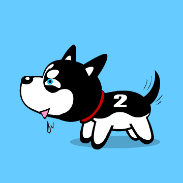

190808112汤芊瑶的博客主页
基本信息
我是来自媒体工程学院
软件工程一班的汤芊瑶
籍贯：四川
我的兴趣爱好：追剧、舞蹈
返回顶部关于我
出生地：四川成都
出生年月日：2001年2月18日
在读学校：浙江传媒学院
专业：软件工程
喜欢的动物：柯基，哈士奇，金毛，拉布拉多
大学期望：学习新技能，挖掘自我隐藏能力
返回顶部
日志
《苔》
（清）袁枚
白日不到处，青春恰自来。
苔花如米小，也学牡丹开。
虽然苔并不开花，但袁老先生为我们传达生命无贵贱的精神确实感动了很多人，普通人也有属于自己的伟大。
返回顶部
作品
返回顶部
相册
迪士尼公主
 返回顶部
返回顶部
联系
QQ：2466380963
邮箱：2466380963@qq.com
返回顶部
喜欢的动物：柯基，哈士奇，金毛，拉布拉多
大学期望：学习新技能，挖掘自我隐藏能力
返回顶部日志
《苔》 （清）袁枚 白日不到处，青春恰自来。 苔花如米小，也学牡丹开。 虽然苔并不开花，但袁老先生为我们传达生命无贵贱的精神确实感动了很多人，普通人也有属于自己的伟大。
返回顶部作品
返回顶部相册
迪士尼公主
返回顶部